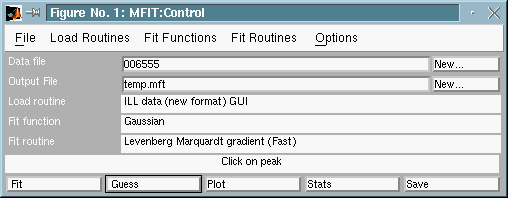
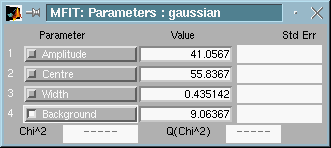
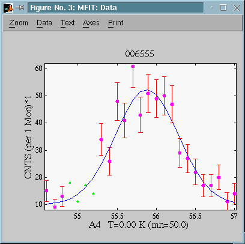
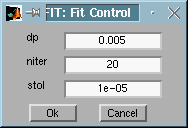

Version 4.2. (1999)
By now you should have successfully loaded a
set of data, and chosen a fitting function.
There should be three Mfit windows open: the control window,
the data window, and the parameters window. You can now begin fitting.
Basic fitting
-
Getting starting parameters
-
Performing a fit
More advanced fitting
-
Fix and free parameters
-
Select data to fit
-
The autoguess feature
-
Change fit routine options
-
Choosing an alternate fit routine
Basic fitting
 Get starting parameters
Get starting parameters
Non-linear fitting works by using an algorithm to attempt to improve on
a first 'guess' that you make for the function parameters that fit your
data. The first step in fitting is to give Mfit a set of
starting parameters to work with. You can do this in two ways. The first
is simply to type them into the parameters window:

Fig 1 : Mfit : parameter window
you click on the box showing the value of the parameter you want to
change, and type the new value. After you have entered values for all the
parameters, press the 'plot' button in the control window, and the function
will be drawn in the data window.
This is slow, and for many functions it's not obvious what starting
parameters might be. Many Mfit fit functions allow you to
get the starting parameters with the mouse, by clicking on points in the
data window. Click on the 'guess' button in the control window:

Fig 2 : Mfit : control window asking for a peak position.
and follow the prompts displayed in the message box, the wide test box
just above the row of buttons in the control window. For example, many
peak fit functions ask you to click on the centre of the peak (in the data
window), then on the width (i.e. the half height position), and then on
the background. When you've fiinished, the function will be draw in the
data window.
Beginning a fit
Having chosen starting parameters, you can now begin the fit by pressing
the 'fit' button in the control window. As the fit progresses Mfit
shows the number of fit iterations in the message box, and draw the function
with the current parameters in red in the data window. When the fit finishes,
the word 'Done' is displayed in the message box, and the values in the
parameters window are the results of the fit. The parameters window also
displays the uncertainties associated with each parameter value, and the
value of the reduced chi squared, and Q, the probability that chi squared
should exceed its current value by chance.
Next: Saving results
More advanced fitting
Fix and free parameters
You will often want to fix some of the function parameters to preset values,
preventing the fitting algorithm from changing them during the fit. You
do this simply by clicking in the check box to the left of the parameter
name in the parameters window:

Fig 3 : Mfit : parameter window with a fixed backgroung
Here, the 'Background' parameter has been fixed at 9.06. You can free
a parameter by clicking on the checkbox again.
Select data to fit
Sometimes, you may want to restrict the data points you want to fit: you
might just want to fit a small feature in your data, or you may want to
exclude data points that you believe are spurious (dangerous, unless you
have very good reasons!) You can include and exclude points from the fit
by choosing operations from the 'select data' menu in the data window:

Fig 4 : Mfit : Deselected points in the Data window
To select data points to include in the fit, choose 'Select Data' in
the 'Data' menu of the 'Mfit : Data' window . The cursor
will change to a cross hair, and you click and drag on the data window
to define a box enclosing the data points you want to select. Keep clicking
and dragging until you have selected all the points you want to include.
You deselect points in the same way. To set the zoom mode again (default
mode), just use the Zoom menu.
The AutoGuess feature
Most fit functions require peak positions, widths, amplitudes and backgrounds.
Mfit
can
perform an automatic guess for such parameters. When checking the 'AutoGuess'
item in the Option menu of the control window, it analyzes the data, looking
for peak characteristics, and sets the guessed values to parameters, according
to their names. It does work fine for most functions, but the data
must contain enough points to enable an efficient data analysis.
Change
fit routine options
It is possible to change some parameters controling the fitting process.
To do so, select the Fit Control item of the Options menu
in 'Mfit : Control window':

Fig 5 : Mfit : The Fit control window
You can there change :
-
dp - this parameter depends on the fit routine (see Choosing
an alternate fit routine)
-
for the Marquadt Levenberg method, this is the step used to compute partial
derivatives f(x,p+dp) - f(x,p)/dp (in percent of parameter). Reasonable
value should be below 0.1 (10 %) ; when higher, this could lead to uncertainties
in derivative estimates.
-
for the Simplex method, it indicates the exploration range around starting
parameter set (in %). For instance, a value of 0.1 will indicate that each
parameter will first be investigated between +10%/-10% around starting
value. This range can be extended during simplex fitting process. Reasonable
values should be between, say 0.1 (10 %) and 0.5(50 %). High values are
to be used when your starting parameters are very approximative.
-
niter - maximum number of iterations
-
stol - sets the convergence tolerancy for fit. When the fit criterion
(usually least-square) variation between two fit iterations is less than
that value, the fit is considered to be stable, and finishes.
Choosing an alternate
fit routine
The standard fit procedure (optimization) is to minimize the least-square
criterion by mean of an adaptative gradient (Marquardt-Levenberg method).
This routine is supplied in a graphic mode (showing the fit process, and
the converging parameters), as well as a non-graphic faster routine.
But you may choose to use some other fitting procedure in the 'Fit
Routine' menu of the Control window. For instance, a simplex method
is also supplied.
-
Marquardt-Levenberg method - is fast and efficient, but can converge
towards a wrong solution in some cases (local criterion minimum)
-
Simplex method - is slower, but can easely avoid local criterion
minima solutions, and finally converge to the global minimum
Refer to the How to write fitting routines page
in order to add your own minimization method.
Next: Saving results
See also: How to write fitting routines
, How to write fitting functions
(c) Martin Zinkin. June 14 1996. Revised E.
Farhi and D. McMorrow. January
3, 2000.